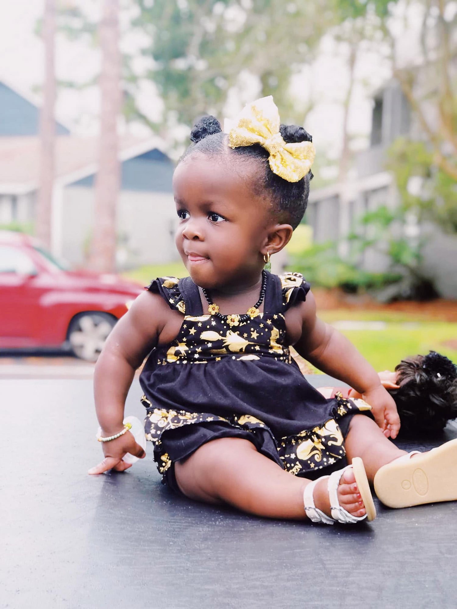

Eden
America AchondroplasiaThis is Eden Olivia. She has a type of Dwarfism called Achondroplasia. Her bones are shorter than yours and she will never be as tall as you are. However, she’s capable of doing most of the things that you do, just maybe in a different way - her way. She’s also capable of doing things that you can’t.
We enjoy and appreciate all the support and love that we receive. What we don’t need is sympathy. My child is a masterpiece, something to be celebrated and not pitied. Eden is a free spirit. Beyond her years, she is a sassy, adventurous, loving, wise, and beautiful two year old. To know her is to love her and to understand our journey with Achondroplasia.
Get involved Back to all stories